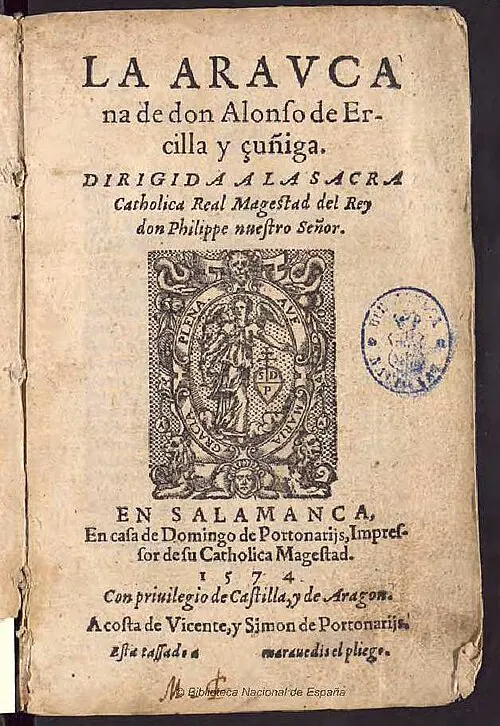

La Araucana de Alonso de Ercilla

Alonso de Ercilla y Zúñiga, noble y soldado español, llegó a Chile en 1557 con el gobernador García Hurtado de Mendoza. Participó en campañas contra los mapuche en la zona de Arauco y en una expedición hacia el sur. En 1558 fue condenado a muerte tras una disputa con otro soldado; la pena le fue conmutada por el destierro y luego volvió a España.
Allí publicó La Araucana, un extenso poema épico en octavas reales, en tres partes: 1569, 1578 y 1589. Incluye versos célebres como "Chile, fértil provincia y señalada" y narra la guerra de Arauco: entre otros episodios, la muerte de Pedro de Valdivia en la Batalla de Tucapel y las campañas en que el propio autor participó. Ercilla retrató a líderes mapuche como Lautaro, Caupolicán y Colocolo con rasgos de héroes clásicos.
Cervantes la elogió en el Quijote, y la obra influyó en la identidad chilena: el nombre de la Logia Lautarina, de la época de la Independencia, evoca a Lautaro. Los historiadores advierten que no es un documento neutral: mezcla hechos y ficción, como la prueba del tronco de Caupolicán, y mira a los mapuche desde valores europeos.
Versión para niños
Alonso de Ercilla era un joven soldado español que llegó a Chile en 1557 para participar en la guerra contra el pueblo mapuche. Mientras combatía, escribía versos. De vuelta en España, publicó un largo poema llamado La Araucana. La primera parte salió en 1569. En él cuenta la guerra y describe con admiración la valentía de líderes mapuche como Lautaro y Caupolicán. Es uno de los primeros libros que hablan de Chile.
Para maestros
Nivel sugerido: 5° básico
Objetivo: Reconocer La Araucana como fuente literaria sobre la conquista y distinguir entre los hechos históricos y la creación poética.
Preguntas para la clase:
- ¿Por qué un soldado español admiraría a sus enemigos?
- ¿Qué partes del poema podrían ser hechos reales y cuáles invención?
- ¿Cómo contaría esta misma guerra un poeta mapuche?
Actividad (20–30 min): El docente lee en voz alta una estrofa adaptada de La Araucana. Los estudiantes subrayan las palabras que describen a los mapuche y discuten qué imagen transmiten. Luego escriben, en parejas, cuatro versos sobre la misma guerra desde la mirada mapuche.
Fuentes sugeridas: Memoria Chilena; Biblioteca Nacional Digital; Biblioteca del Congreso Nacional (BCN).
Objetivos de Aprendizaje (Currículum Nacional)
- 5° básico · HI05 OA 07 Explicar y dar ejemplos de las distintas formas en las que españoles y mapuches se relacionaron … resistencia mapuche y guerra de Arauco
- 8° básico · HI08 OA 07 Analizar y evaluar el impacto de la conquista de América en la cultura europea … el desafío de representar una nueva realidad
- 8° básico · HI08 OA 12 … las formas de convivencia y los tipos de conflicto que surgen entre españoles, mestizos y mapuches como resultado del fracaso de la conquista de Arauco
Personajes
Revisión humana pendiente. Cómo se revisa · Reportar un error
Cómo citar: Historia de Chile. (2026). La Araucana de Alonso de Ercilla. En Historia de Chile: atlas y línea de tiempo. https://moises-salgado.github.io/historia-de-chile/momento/la-araucana-de-alonso-de-ercilla.html